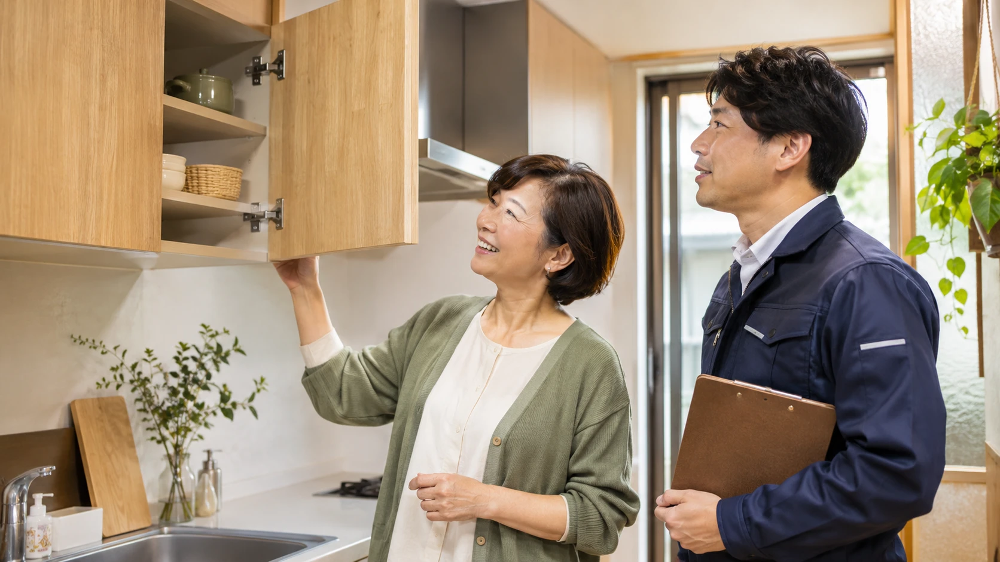
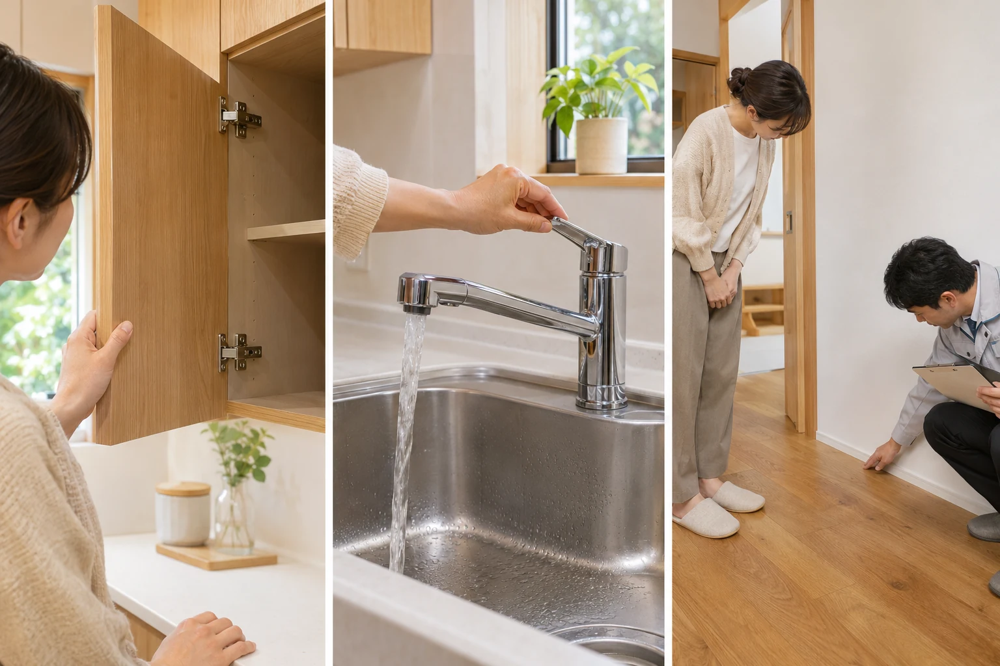

待ちに待ったリフォームの引き渡し。きれいになった部屋を見るとうれしい一方で、「当日は、どこを見て何を聞けばいいの？」と気になりますよね。
図面と見比べる、いつもの操作を試す、残る対応を記録する。この三つを担当者と一緒に進めましょう。当日スマホで開いて、順に確かめられるチェック項目をまとめました。
相談に持っていける、暮らしのヒント
公開日：
 文｜エイスケ（住宅と教育の専門家）
文｜エイスケ（住宅と教育の専門家）

待ちに待ったリフォームの引き渡し。きれいになった部屋を見るとうれしい一方で、「当日は、どこを見て何を聞けばいいの？」と気になりますよね。
図面と見比べる、いつもの操作を試す、残る対応を記録する。この三つを担当者と一緒に進めましょう。当日スマホで開いて、順に確かめられるチェック項目をまとめました。
仕上がりを確認する「完成検査（竣工検査）」は、引き渡し前に担当者と日程を決めておきます。手直しが必要なら、対応してもう一度確認する時間も見込んでもらいましょう。
書類がそろっているか不安なら、「当日、一緒に照らし合わせる最新の図面と商品一覧を用意してもらえますか」と頼んでおきましょう。工事中に変えたところも、最終の内容で確認します。
担当者と工事した場所を順に回ります。まず頼んだ色・材料・品番と仕上がりを見比べ、その場で普段の操作も試すと、確認漏れを減らせます。

| 今回工事した場所 | 担当者と一緒に確かめること |
|---|---|
| 壁・床 | 色・材料は希望どおりか。端や角の浮き、気になる傷や汚れはないか。実際に歩き、気になる音も聞く。 |
| 扉・窓・収納 | 開ける、閉める、鍵をかける。引っ掛かりや干渉はないか。棚の位置や開く向きも図面と照合。 |
| キッチン・洗面・浴室 | 使用開始してよいか確認してから、湯水を出す・流す。漏れや排水の様子を担当者と見る。 |
| 照明・換気・リモコン | スイッチを押す。照明が点くか、換気が動くか。コンセントの位置・数も約束どおりか確認。 |
| 工事の周辺 | 搬入経路など、工事した場所以外にも気になる傷や残った養生材がないか確認。 |
該当する工事の項目を使ってください。電気配線や配管を自分で分解したり、屋根や高所へ上がったりせず、担当者による確認や施工写真の説明を受けましょう。
「ここの隙間が少し気になります。仕上がりとして問題ないか、一緒に見てもらえますか？」
専門的な良し悪しを自分で決めるより、気になる場所と動きを具体的に伝えることが大切です。写真は場所が分かる全体と、気になる部分の近くを一枚ずつ撮ると、後でも説明しやすくなります。
説明を聞いたら、自分の手でも一度操作してみましょう。私なら、「今日使うこと」と「掃除のときにすること」を分けて教わります。機能が多い設備でも、最初に覚えることが絞れるからです。
夜間・休日の連絡方法や、点検の予定も聞いておくと安心です。操作の動画を残したい場合は、撮影してよいか担当者に一声かけましょう。
気になる点があったら、写真を見ながら「何を、いつ、誰が確かめるか」まで記録します。「後日対応します」と聞いたときも、次の予定が分かる形にしてもらいましょう。
このメモを担当者とも共有し、対応後に同じ場所を確かめます。工事完了の確認書に署名する前には、書類が何を確認するものか、残っている手直しがどう記載されるかを説明してもらいましょう。引き渡しと残金の支払いは、契約した条件と手直しの予定を照らして相談します。
設備メーカーの保証と施工会社の工事保証では、対象や窓口が異なることがあります。分からなければ「この設備で困ったら、最初はどこに電話すればいいですか」と聞いておくと、使い始めてから探し回らずに済みます。
「新しくなった場所を一番よく使うのは誰？ 説明書と連絡先はどこに置く？」。操作を一緒に試し、家族の誰でも探せる場所を決めましょう。
構成・読者の困りごとの参考
困ったときの相談先
関連記事
この記事を書いた人｜エイスケ
1986年生まれ。実家の工務店・不動産に10年間従事したのち、教育の世界へ。住宅と教育、両方の視点から「豊かな暮らし」をテーマに執筆します。※本コラムは筆者個人の見解・経験に基づくものです。最終的な判断は各分野の専門家にご相談ください。